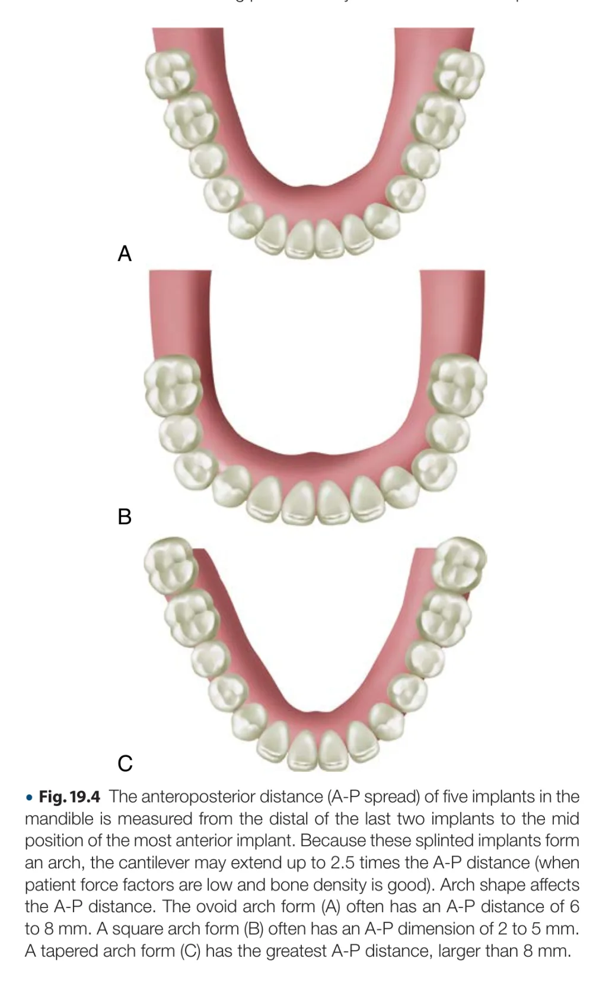
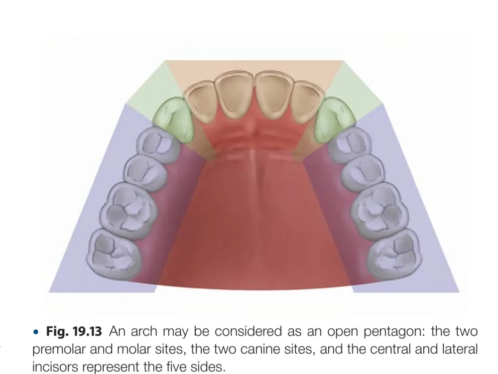

نسخه استخراجشده؛ ترجمه یا تأیید علمی انجام نشده است. وضعیت: captured
در قاعدهی نخست دیدی که کانتیلور باید حذف شود. ولی در قوس بیدندان، کانتیلور گاهی ناگزیر است. پرسش این است: چقدر؟
پاسخی کمّی وجود دارد که بر پایهی مفهوم گسترهی قدامیـخلفی (A-P spread) بنا شده است.
نخست، تعریف دقیق اندازهگیری — و این را باید درست بدانی:
«فاصلهی قدامیـخلفی (گسترهی A-P) پنج ایمپلنت در مندیبل، از دیستالِ دو ایمپلنت آخر تا موقعیت میانی قدامیترین ایمپلنت اندازهگیری میشود.»
به دو انتهای این اندازهگیری دقت کن: یک سر دیستالِ ایمپلنتهای انتهایی است (نه مرکزشان) و سر دیگر مرکزِ قدامیترین ایمپلنت. این عدم تقارن عمدی است و اگر آن را اشتباه اندازه بگیری، عدد نهایی غلط از آب درمیآید.
و اکنون قاعدهی طلایی:
«چون این ایمپلنتهای اسپلینتشده یک قوس را تشکیل میدهند، کانتیلور میتواند تا ۲٫۵ برابر فاصلهی A-P امتداد یابد — وقتی عوامل نیروی بیمار پایین و تراکم استخوان خوب باشد.»
ضریب ۲٫۵ را حفظ کن — ولی شرطش را هم حفظ کن. این عدد یک سقف مشروط است، نه یک مجوز عمومی. دو شرط دارد: عوامل نیروی پایین و تراکم استخوان خوب. اگر بیمار براکسر است یا استخوان D4 دارد، این ضریب دیگر معتبر نیست.
و یک قید دیگر: ضریب ۲٫۵ مال ایمپلنتهای اسپلینتشدهای است که یک قوس میسازند. اگر ایمپلنتها در یک صفحه (تقریباً روی یک خط) باشند، کانتیلور بهندرت باید از خود فاصلهی A-P بلندتر شود، هرچقدر هم عوامل نیرو پایین باشد.
و حالا بخشی که بیشترین ارزش بالینی را دارد — شکل قوس:
«شکل قوس بر فاصلهی A-P اثر میگذارد» — و سه شکل را میتوان با عدد از هم جدا کرد:
• قوس بیضی (Ovoid): فاصلهی A-P اغلب ۶ تا ۸ میلیمتر
• قوس مربعی (Square): بُعد A-P اغلب ۲ تا ۵ میلیمتر
• قوس مخروطی (Tapered): بیشترین فاصلهی A-P، بزرگتر از ۸ میلیمتر
حالا این اعداد را در ضریب ۲٫۵ ضرب کن و ببین چه اتفاقی میافتد:
• قوس مربعی با A-P برابر ۲ میلیمتر ← کانتیلور مجاز حدود ۵ میلیمتر
• قوس مخروطی با A-P برابر ۱۰ میلیمتر ← کانتیلور مجاز حدود ۲۵ میلیمتر
پنج برابر تفاوت — و هیچکدام از این دو بیمار «اشتباه» نیست. صرفاً هندسهی قوسشان فرق دارد.
و این نتیجهی مهمی دارد که باید در ذهن نگه داری:
بیمار با قوس مربعی، نامزد بدی برای کانتیلور است — نه بهدلیل کیفیت استخوان یا مهارت جراح، بلکه چون ایمپلنتهایش تقریباً روی یک خط مستقیم قرار میگیرند و گسترهی A-P کوتاهی دارند.
و برعکس، قوس مخروطی بیشترین آزادی را میدهد چون ایمپلنت قدامی بهطور طبیعی بسیار جلوتر از خط ایمپلنتهای خلفی میایستد.
پس شکل قوس را در جلسهی نخست ارزیابی کن، نه هنگام طراحی فریمورک. این یکی از معدود متغیرهایی است که نمیتوانی تغییرش دهی — فقط میتوانی طرح را با آن سازگار کنی.

قواعد موقعیت به تو میگویند کجا. این بخش میگوید چند تا — و پاسخ به عوامل نیرو وابسته است.
سه دندان مجاور:
«وقتی سه دندان مجاور جایگزین میشوند، تکیهگاههای انتهایی موقعیتهای کلیدی ایمپلنت هستند. وقتی همهی عوامل نیروی بیمار پایین و تراکم استخوان خوب باشد، دو ایمپلنت ممکن است برای جایگزینی سه دندان غایب کافی باشد. با این حال، وقتی عوامل نیرو بالا باشد، یک ایمپلنت برای هر دندان غایب توصیه میشود.»
دو ایمپلنت یا سه ایمپلنت — و تفاوت را نه آناتومی، بلکه عوامل نیرو تعیین میکند. این دقیقاً همان جایی است که ارزیابی پارافانکشن از ماژول ۱ به یک تصمیم عددی تبدیل میشود.
چهار دندان مجاور:
«وقتی چهار دندان مجاور غایباند، تکیهگاههای انتهایی موقعیتهای کلیدی ایمپلنت هستند. بهندرت این دو ایمپلنت برای جایگزینی چهار دندان خلفی کافی است.»
و تنها یک استثنا وجود دارد: «استثنا وقتی است که در برابر یک دنچر کامل قرار گیرد.»
این استثنا هوشمندانه است و ارزش توضیح دارد: دنچر کامل مقابل، حداکثر نیروی گاز را بهشدت پایین میآورد. پس همان دو ایمپلنتی که در برابر دندان طبیعی ناکافی است، در برابر دنچر کافی میشود. باز هم قوس مقابل، متغیر تصمیم است.
و قاعدهی معمول: «معمولاً سه ایمپلنت قرار میگیرد، با ایمپلنت اضافی که بهطور ایدهآل در موقعیتی که استخوان در دسترستر است قرار میگیرد، بهدلیل نیروهای اکلوزالی بالاتر.»
این عبارت را نگه دار. ایمپلنت سوم، برخلاف دو تکیهگاه انتهایی، موقعیت اجباری ندارد — پس آنجا میتوانی با استخوان موجود مصالحه کنی.
و اکنون یک هشدار دربارهی «حداقل»:
«شمار ایمپلنتها در یک طرح درمان باید بهندرت از حداقل عدد استفاده کند.»
«بهندرت از حداقل استفاده کن» — و دلیلش حاشیهی اطمینان است. طرح حداقلی اگر یک ایمپلنت را از دست بدهد، هیچ پشتوانهای ندارد و کل پروتز در خطر اضافهبار قرار میگیرد. قواعد موقعیت کلیدی یک کف را تعریف میکنند و کف، جای درستی برای ایستادن نیست.
و شرط کافی بودن حداقل را روشن میکند: تنها وقتی عوامل نیرو پایین باشد (پارافانکشن، دینامیک جویدن، ارتفاع تاج) و تراکم استخوان خوب باشد (D1، D2).
و شاهدی از مطالعات قوس کامل:
«در پروتزهای قوس کامل، مطالعاتی که شش ایمپلنت و چهار تکیهگاه ایمپلنت را مقایسه میکنند، توزیع بهتر و استرس کاهشیافته را در سیستم ششایمپلنتی نشان میدهند.»
و ببین این کاهش استرس در کدام اجزا دیده میشود: تاج، سمان، اباتمنت، پیچ اباتمنت، استخوان مارجینال، رابط استخوانـایمپلنت، و اجزای ایمپلنت.
هفت جزء — یعنی افزودن ایمپلنت به یک نقطه کمک نمیکند؛ به کل زنجیره کمک میکند.
و در انتها، سختترین سناریو:
«بنابراین در یک مرد جوان و درشتاندام با براکسیسم شدید و فضای ارتفاع تاج بیش از حد طبیعی در نواحی خلفی دهان، که در برابر یک ترمیم ایمپلنت قرار میگیرد، یک ایمپلنت برای هر ریشهی غایب لازم خواهد بود (دو ایمپلنت برای هر مولر).»
دو ایمپلنت برای هر مولر. و به انباشت عوامل خطر در این توصیف دقت کن — جوان، درشتاندام، براکسر، ارتفاع تاج زیاد، و قوس مقابل ایمپلنت. پنج عامل که هر پنج را در ماژول ۱ بهتنهایی شناختی، و اینجا با هم ظاهر میشوند.
و همین شمار ممکن است برای بیماری هم لازم شود که عوامل نیروی متوسط ولی استخوان ضعیف (D4) در محل ایمپلنت دارد.
